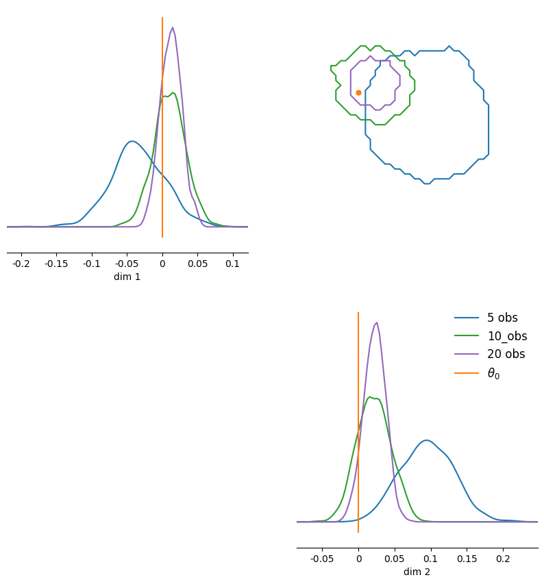

Score-based methods : improvements and new features¶
sbi incorporates recent algorithms based on Score Matching generative models. This is encoded in the sbi class NPSE (Neural Posterior Score Estimation).
In this tutorial, we will show how to use NPSE and highlight the new functionalities of score-based methods with a toy example.
For more information, see :
Score Matching:
-
Hyv√§rinen, A. “Estimation of Non-Normalized Statistical Models by Score Matching.” JMLR 2005.
-
Song, Y., et al. “Score-Based Generative Modeling through Stochastic Differential Equations.” ICLR 2021.
-
Geffner, T., Papamakarios, G., and Mnih, A. “Score modeling for simulation-based inference.” NeurIPS 2022 Workshop on Score-Based Methods. 2022.
-
Sharrock, L., Simons, J., et al. “Sequential neural score estimation: Likelihood-free inference with conditional score based diffusion models.” ICML 2024.
-
Karras, T., Aittala, M., et al. “Elucidating the Design Space of Diffusion-Based Generative Models.” NeurIPS 2022.
-
Linhart J., et al. “Diffusion posterior sampling for simulation-based inference in tall data settings.” 2024
Key concepts of NPSE¶
NPSE approximates a target posterior distribution \(p_0(\theta|x_0)\) by learning its score function, i.e., gradient of the log-density of the (diffused) posterior \(\nabla_{\theta}\log p_t(\theta|x)\), for all times \(t\) and all conditional observations \(x\), using the denoising score matching loss. Score-based generative models are indeed closely linked to diffusion models, especially during the sampling phase.
Note that only the single-round version of NPSE is implemented currently.
Sampling from the target posterior \(p_0(\theta|x_0)\) can be split into \(2\) steps : - forward step : diffuse samples from \(p_0(\theta|x_0)\) over time and learn the diffused scores i.e. \(\nabla_{\theta}\log p_t(\theta|x)\) for all \(t \in [0,t_{\max}]\). At the end (\(t=t_{\max}\)) the diffused posterior is really close to a standard Gaussian. - reverse step : reverse the diffusion process, starting from a standard Gaussian, using the learnt scores to get new samples from \(p_0(\theta|x_0)\).
We first introduce the sampling for a posterior given a single observation \(x_0\) and then for tall posterior (when \(x_0\) is a batch of i.i.d. observations).
Single observation¶
In this section, \(x_0\) is a single observation. We define a simple simulator in 2D.
import matplotlib.pyplot as plt
import torch
from torch.distributions import MultivariateNormal
from sbi.analysis import pairplot
from sbi.inference import NPSE
# Example toy simulator
# Define the prior
num_dims = 2
num_simulations = 5000
prior = MultivariateNormal(loc=torch.zeros(num_dims), covariance_matrix=torch.eye(num_dims))
def simulator(theta):
"""Linear gaussian simulator."""
return theta + 1.0 + torch.randn_like(theta) * 0.1
# Produce simulations
theta = prior.sample((num_simulations,))
x = simulator(theta)
# Ground truth parameter/observation
theta_o = torch.zeros(num_dims)
x_o = simulator(theta_o)
# Instantiate NPSE and append simulations
inference = NPSE(prior=prior, sde_type="vp")
inference.append_simulations(theta, x)
The argument sde_type defines whether the forward diffusion process has a noising schedule that is Variance Exploding (ve, i.e., SMLD), Variance Preserving (vp, i.e., DDPM), or sub-Variance Preserving (subvp) in the limit.
The current default noising schedule is ve. As we care more about sampling quality than sampling times in our example, we choose to work with the vp option.
Training and improved convergence checks¶
# Train the score estimator
score_estimator = inference.train()
Neural network successfully converged after 56 epochs.
The method train calls the denoising score-matching loss corresponding to the chosen noising schedule (VE, VP, subVP). As the variance of the loss may be high, especially for times \(t\) near \(0\), control variates are automatically used in the expression of the loss.
As NPSE deals with times, convergence checks have been changed during training : the validation loss is now evaluated at a fixed set of times \(T = \{t_0,..,t_N\}\) to reduce its variance, meaning that the entire validation batch is only evaluated at all times \(t_i \in T\).
After training, we obtain an amortized score estimate that approximates the score of the diffused posterior distribution for all times \(t \in [0,t_{\max}]\) and any conditional observation \(x\), i.e. \(\nabla_{\theta}\log p_t(\theta|x)\).
We can use these score estimates to reverse the diffusion process and sample from the target distribution.
Sampling procedures¶
# Build the posterior using the trained score estimate, and sample with the sde option
posterior = inference.build_posterior(score_estimator, sample_with="sde")
samples = posterior.sample((10000,), x=x_o, predictor="euler_maruyama", corrector="langevin")
The argument sample_with allows to choose which kind of solver we want to use to reverse the diffusion equation :
-
"ode": builds the probability flow ODE using the zuko library. We can sample from the flow afterwards by calling.sample() -
"sde": solves the reverse SDE by alternating prediction and correction steps
Both options contain rejection sampling steps to ensure prior coverage.
Note that in the "sde" option, the only available predictor is "euler_maruyama" and the available correctors are "langevin" (for Unadjusted Langevin Dynamics) and "gibbs".
The argument x_o in the .sample() method indicates which observation is set before sampling from the corresponding posterior and replaces the .set_default()method.
MAP estimation¶
It is possible to get a Maximum A Posterior (MAP) estimate in the case of score-based methods. Note that in this case, you should first set the default observation, using the set_default_x method !
The optimization procedure (gradient ascent) aims at finding a maximizer \(\theta_{\max}\) of the posterior log-probability \(\log p(\theta|x_0)\).
The optimization can be interrupted at any time if the user sees that the log-probability converges : the best estimate will still be saved and can be accessed with .map().
The default values used by this function (e.g. number of optimization steps, number of starting positions, learning rate) might require hand-tuning from the user for the problem at hand.
# MAP estimation
posterior.set_default_x(x_o)
map_est = posterior.map(num_iter=5)
print("The MAP estimate is : ", map_est)
The MAP estimate is : tensor([[0.1307, 0.0084]])
The argument num_iter indicates the number of optimization steps (gradient ascent) that the algorithm takes to find the MAP. In our simple example, a small number of iterations is sufficient for the the log-probability (of the posterior) to converge.
# Plot posterior samples and MAP
fig, ax = pairplot(
samples,figsize=(5, 5),
diag = "kde",
upper="contour",
diag_kwargs=dict(bins=100),
upper_kwargs=dict(levels=[0.95]),
points=[map_est,theta_o.unsqueeze(0)], # add ground truth thetas and MAP
fig_kwargs=dict(
points_offdiag={"markersize": 6}
)
)
ax[0][1].legend([r"$\theta_0$", r"$\theta_{MAP}$"], loc="upper right")#, bbox_to_anchor=[2.0, 1.0, 0.0, 0.0]);
plt.sca(ax[1, 1]);
Batched sampling¶
Given a batch of observations \([x_1, ..., x_B]\) (not necessarily i.i.d.), it is also possible to get samples from posteriors \(p(\theta|x_1)\), … ,\(p(\theta|x_B)\), in a vectorized manner and without retraining the score network ! This is implemented in the .sample_batched() method of the posterior.
The argument sample_shape specifies the desired number of samples for each posterior.
# Sample in a vectorized manner from different posteriors
num_obs = 5
theta_batch = prior.sample((num_obs,)) # get 5 different parameters
x_batch = simulator(theta_batch) # get 5 corresponding obs
posterior_batched_samples = posterior.sample_batched(sample_shape=(100,), x=x_batch)
print("The size of the batched samples is : ", posterior_batched_samples.size())
The size of the batched samples is : torch.Size([100, 5, 2])
Score-based methods for i.i.d. data¶
In this section, \(x_0\) is a batch of i.i.d. observations, \(x_0=[x_0^0,...,x_0^N]\). It is possible to sample from the tall posterior distribution \(p(\theta|x_0^0,...,x_0^N)\) using NPSE trained for individual observations !
Once the score estimate is trained (see previous section), sampling from \(p(\theta|x_0^0,...,x_0^N)\) is split into \(2\) steps :
-
estimate the scores of the tall posterior for all times \(t\) based on the learnt scores of individual posteriors \(p(\theta|x_0^i)\) for all \(i\). \(4\) different methods are implemented for the moment.
-
reverse the diffusion process or perform Langevin dynamics using the estimated scores
Note that in this i.i.d. setting, only the "sde" option for sampling is implemented for the moment.
In the example, we will draw different observations from the same parameter \(\theta_0\) and see how the posterior evolves with an increasing number of conditional observations.
# Build the tall posterior, and sample using sde option
tall_posterior = inference.build_posterior(score_estimator, prior=prior, sample_with="sde")
x_iid = simulator(theta_o.repeat(20,1))
# Sample from a posterior conditioned with 5 observations
tall_samples_5_obs = tall_posterior.sample(sample_shape=(1000,), x=x_iid[:5,:], iid_method="gauss")
# Sample from a posterior conditioned with 10 observations
tall_samples_10_obs = tall_posterior.sample(sample_shape=(1000,), x=x_iid[:10,:], iid_method="gauss")
# Sample from a posterior conditioned with 20 observations
tall_samples_20_obs = tall_posterior.sample(sample_shape=(1000,), x=x_iid, iid_method="gauss")
Note that the posterior object created by the .build_posterior() is essentially the same as in the previous section (with single observations).
To sample, we call .sample() as before but we now pass a batch of observations to the argument x : the algorithm will assume those to be i.i.d. and automatically switch to the i.i.d. setting.
The argument iid_method only applies when x is a batch of observations.
It specifies the method used to estimate the scores of the tall posterior at different times \(t\) using the scores of individual posteriors. For the moment the available options are :
-
"jac_gauss","gauss"and"auto_gauss"(see Linhart et al., 2024 for more details) -
"fnpe", standing for Factorized Neural Posterior Estimation (see Geffner et al., 2023 for more details).
# Plot the samples and the ground truth parameter
fig, ax = pairplot(
samples=[tall_samples_5_obs,tall_samples_10_obs,tall_samples_20_obs],
figsize=(10, 10),
points=theta_o.unsqueeze(0),
diag="kde",
upper="contour",
diag_kwargs=dict(bins=100),
upper_kwargs=dict(levels=[0.95]),
fig_kwargs=dict(
#points_colors=["k"],
points_offdiag=dict(markersize=10),
),
)
plt.sca(ax[1, 1])
plt.legend(
["5 obs", "10_obs","20 obs"]
+ [r"$\theta_0$"],
frameon=False,
fontsize=12,
);

As expected, the posterior concentrates around the ground truth parameter \(\theta_0\) as the number of i.i.d. conditional observations increases.